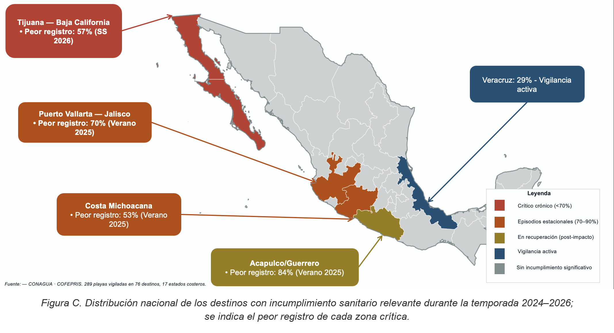

Informe — resumen de la situación
Sitios en alerta
Resultados nacionales
Playas aptas / no aptas y % de cumplimiento por año (promedio de los 3 operativos)
Playas NO APTA por año
Número de playas fuera de norma (>200 NMP) por año, desglosado por temporada
Cumplimiento por estado
% del último operativo, orden ascendente
Rojo: crítico (<90 %); ámbar: atención (90–98 %); verde: excelente (≥99 %). Línea: promedio nacional.
Destinos con más incumplimientos
Ranking por número de playas NO APTA acumuladas (2014–2026)
Cada barra suma las veces que una playa del destino resultó NO APTA en todos los operativos 2014–2026.
Mapa de calor por estado, año y periodo
% de cumplimiento por año (cada año con sus 3 periodos: SS, V, I); estados ordenados de menor a mayor desempeño promedio
Color: rojo = bajo cumplimiento; verde = alto. Recalculado según el nivel seleccionado.
Sitios con incumplimiento recurrente
Sitios que incumplieron la norma en 3 o más operativos
Rojo: ≥5 periodos (crónico); naranja: 4; dorado: 3 periodos con incumplimiento.
Explorador por estado
Evolución de cada destino dentro del estado seleccionado
Una línea por destino del estado. Cambia el nivel (playas / muestras) en la barra superior.
Mapa nacional de cumplimiento
Estados costeros coloreados según los datos del operativo seleccionado
Ver mapa editorial de referencia

El coropleta se recalcula con los datos cargados y el nivel seleccionado; los estados sin litoral aparecen en gris. El mapa editorial es una figura de referencia.